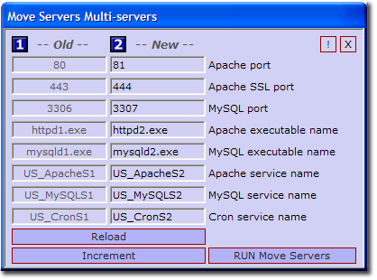

Multi-Servers
Multi-servers enable you to run more than one copy of The Uniform Server (Apache and MySQL) on the same PC. Moving servers to different ports also allows you to run The Uniform Server alongside other servers such as IIS. This page details the changes made when the Multi-servers menu is invoked.
Multi Servers
|
Multi-servers enables you to run more than one copy of The Uniform Server (Apache and MySQL) on the same PC. To achieve this, the executables and services are renamed and the ports the servers run on are changed.
Values under the old column are the current server values. After clicking “Run Move Servers” these values are overwritten in their corresponding configurations files with the values shown in the new column.
Changes are reflected in the tray icon, which is numbered 1 to 9. This number generally corresponds to the digit appended to the executable and service names. The number of separate server sets is not limited to 9, but subsequent sets will not show a digit.
Note:
Ideally you would run this menu on a newly extracted copy of The Uniform Server and then add any applications using appropriate configuration parameters.
|

|
Files modified
After running Multi-servers the following files are updated:
|
Apache
- UniServer\usr\local\apache2\conf\httpd.conf
- UniServer\usr\local\apache2\conf\extra\httpd-vhosts.conf
- UniServer\usr\local\apache2\conf\extra\ssl.conf
|
MySQL
- UniServer\usr\local\mysql\my.ini
- UniServer\usr\local\mysql\small_my.ini
- UniServer\usr\local\mysql\medium_my.ini
|
|
PHP
- UniServer\usr\local\php\php.ini
- UniServer\usr\local\php\php_development.ini
- UniServer\usr\local\php\php_production.ini
|
UniController
- UniServer\uni_con\uni_con_program.hta
- UniServer\uni_con\uni_con_service.hta
- UniServer\uni_con\config_tracker.ini
|
|
Cron
- UniServer\uni_con\cron_service\srvstart.ini
- UniServer\uni_con\cron_service\start_automatic.vbs
- UniServer\uni_con\cron_service\z_install.bat
|
Cron
- UniServer\uni_con\cron_service\z_service_start.bat
- UniServer\uni_con\cron_service\z_service_stop.bat
- UniServer\uni_con\cron_service\z_uninstall_service.bat
|
After running Multi-servers the following executables are renamed. Note: x is new digit appended to executable name.
- UniServer\usr\local\apache2\bin\httpd1.exe to UniServer\usr\local\apache2\bin\httpdx.exe
- UniServer\usr\local\mysql\bin\mysqld1.exe to UniServer\usr\local\mysql\bin\mysqldx.exe
|